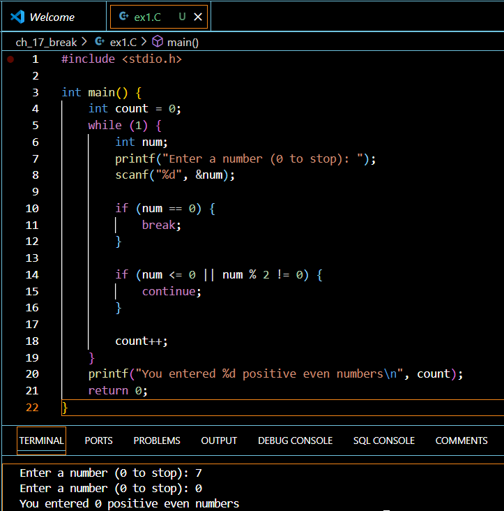

Introduction
Learning to control program flow is a fundamental skill in C programming, and mastering loop control statements is essential for writing efficient code. This comprehensive guide will walk you through the intricacies of breaking in and out of loops, helping you understand when and how to use these powerful control mechanisms.
Understanding Loop Control Basics
What are Loop Control Statements?
Loop control statements are special keywords in C that allow you to modify the normal execution flow of loops. The two primary loop control statements we’ll focus on are: - break: Terminates the loop completely - continue: Skips the rest of the current iteration and moves to the next one
Why Do We Need Loop Control?
Loop control statements provide flexibility in managing program flow. They help you: - Exit loops early when certain conditions are met - Skip unnecessary iterations - Handle exceptional cases - Optimize code performance - Implement complex decision-making logic
The Break Statement
Syntax and Basic Usage
The break statement has a simple syntax:
break;While simple in structure, it’s powerful in functionality. Here’s a basic example:
for (int i = 0; i < 10; i++) {
if (i == 5) {
break; // Exit loop when i reaches 5
}
printf("%d ", i);
}Common Use Cases
- Early Termination
while (1) { // Infinite loop
int input;
scanf("%d", &input);
if (input == -1) {
break; // Exit when user enters -1
}
// Process input
}- Search Operations
for (int i = 0; i < arraySize; i++) {
if (array[i] == searchValue) {
printf("Found at index %d\n", i);
break;
}
}The Continue Statement
Syntax and Purpose
The continue statement syntax is equally straightforward:
continue;When to Use Continue
The continue statement is useful when you want to skip the remaining code in a loop iteration without terminating the entire loop.
Example:
for (int i = 1; i <= 10; i++) {
if (i % 2 == 1) { // Skip odd numbers
continue;
}
printf("%d is even\n", i);
}Continue vs. Break
Let’s compare these control statements:
| Feature | Break | Continue |
|---|---|---|
| Purpose | Terminates loop | Skips current iteration |
| Effect | Exits completely | Jumps to next iteration |
| Scope | Entire loop | Current iteration |
Practical Examples
Breaking Out Early
Here’s a practical example of using break to calculate class averages:
float total = 0.0;
int count;
for (count = 0; count < 25; count++) {
float score;
printf("Enter test score (-1 to stop): ");
scanf("%f", &score);
if (score < 0) {
break;
}
total += score;
}
float average = total / count;
printf("Class average: %.2f\n", average);Skipping Iterations
Here’s how to use continue to process only valid input:
while (1) {
int value;
printf("Enter a positive number: ");
scanf("%d", &value);
if (value <= 0) {
printf("Invalid input, try again\n");
continue;
}
// Process valid input here
}Best Practices
- Always use
breakandcontinuewithin conditional statements - Document the reason for using control statements
- Avoid excessive use that might make code hard to follow
- Consider alternative approaches before using control statements
- Test thoroughly when using these statements
Your Turn! Practice Section
Problem: Create a program that reads numbers until a zero is entered, counting only positive even numbers and breaking when zero is encountered.
Try solving it yourself before looking at the solution below:
Click Here for Solution!
#include <stdio.h>
int main() {
int count = 0;
while (1) {
int num;
printf("Enter a number (0 to stop): ");
scanf("%d", &num);
if (num == 0) {
break;
}
if (num <= 0 || num % 2 != 0) {
continue;
}
count++;
}
printf("You entered %d positive even numbers\n", count);
return 0;
}
Quick Takeaways
breakterminates the entire loopcontinueskips to the next iteration- Both statements should be used within conditional statements
- They provide powerful flow control mechanisms
- Use them judiciously to maintain code readability
FAQs
Q: Can I use break and continue in nested loops? A: Yes, they affect the innermost loop containing them.
Q: What’s the difference between return and break? A:
breakexits only the current loop, whilereturnexits the entire function.Q: Can I use break in switch statements? A: Yes,
breakis commonly used in switch statements to prevent fall-through.Q: Does continue skip all remaining iterations? A: No, it only skips the current iteration and continues with the next one.
Q: Can I use multiple breaks in the same loop? A: Yes, but it might indicate a need to restructure your code.
References:
Conclusion
Understanding loop control statements is crucial for writing efficient C programs. While break and continue are powerful tools, use them thoughtfully and always consider code readability. Practice these concepts regularly to become more proficient in controlling program flow.